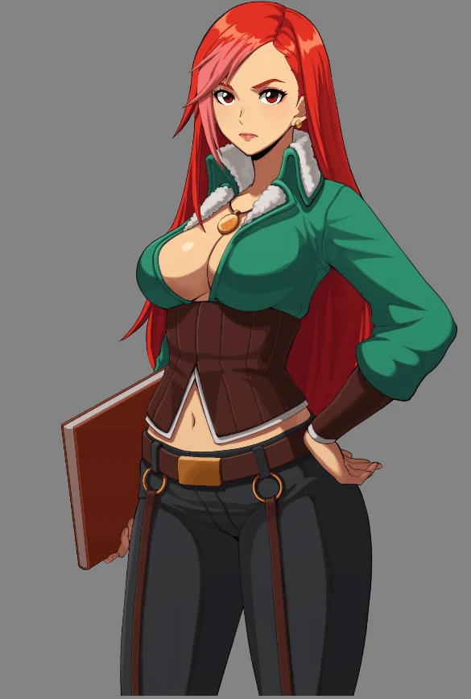

전승훈
2D 애니메이터
Spine 리깅 · 캐릭터 애니메이션
LIVE PREVIEWGIF

블루스톤 · NPC
작업물
작품을 선택하면 상세 뷰어가 열립니다.
샘플은 뷰어 기능을 보여주는 예시이며, 개인 포트폴리오 작업과 구분됩니다.
↗
검색 결과가 없습니다.
다른 검색어나 형식을 선택해 보세요.
15 WORKS
INTERACTIVE / 01
전투 애니메이션 랩
모션의 타이밍과 무게감을 직접 확인하는 공간
씬 준비 중…
PLAYER · 준비 중
TRAINING DUMMY · 준비 중
A 기본 공격S 강공격D 스킬Space 회피R 초기화
1단계 기본 씬 · 현재 Idle 재생과 초기화를 지원합니다. 공격과 터치 조작은 2단계에서 연결합니다. 키보드 초기화는 이 영역에 초점을 둔 상태에서 동작합니다.
개발자 · Idle 로딩 확인
플레이어:
더미:
ABOUT
소개
- 이름
- 전승훈
- 작업
- 캐릭터 리깅 · 2D 애니메이션
- 사용 도구
- Spine 4.3